|
2. Aðýrlýk:
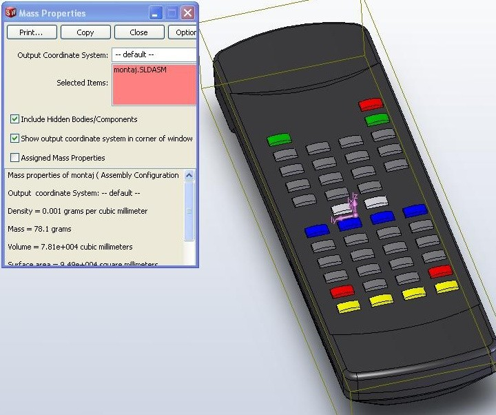
Resim 7: Aðýrlýk hesaplamasý
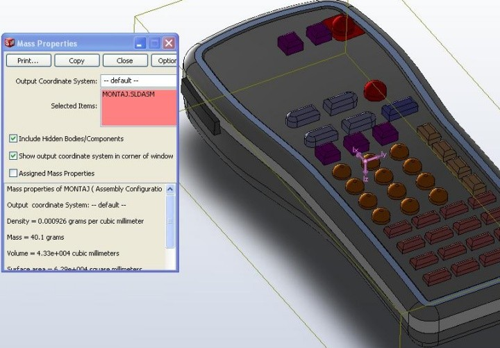
Resim 8: Aðýrlýk hesaplamasý (ýý)
Siyah renkli Resim 7 de görünen kumandanýn elektronik devresi hariç plastik aksamýnýn aðýrlýðý (PP copolymer malzemenin yoðunluðu = 0.905 gr/cm3 ) 78. 1 gram gelmektedir. Resim 8 de görülen yeni tasarlanan kumandanýn aðýrlýðý ise; boyundaki büyük azalma sonucu hacminin de azalmasýyla 40. 1 grama düþmüþtür. Görüldüðü üzere böyle bir üründe 38 gramlýk bir malzeme tasarrufu azýmsanmayacak kadar çoktur ve plastik hammadde maliyeti neredeyse yarýya düþmüþ konumdadýr.
3. Montaj edilebilirlik ve kalýplanabilirlik:
Endüstriyel ürünlerin tasarýmlarý kadar firmaya maliyetleri de önemlidir. Maliyeti etkileyen en önemli unsurlardan birincisi ürünlerin ayný ya da farklý kalýplardan çýktýktan sonra mümkün olan en hýzlý biçimde montaj edilebilmesidir. Plastik ürünlerde genellikle montaj elemaný olarak cývata kullanýlmaz. Yanlarýndan girinti ve çýkýntýlý (týrnaklý) olarak tasarlanýrlar ve buna göre kalýplarý yapýlýr. Ancak burada optimum (en verimli) noktayý bulmak uzmanlýk gerektiren bir durumdur. Burada iki farklý durum aþaðýda resimlerle açýklanmaya çalýþýlacaktýr.
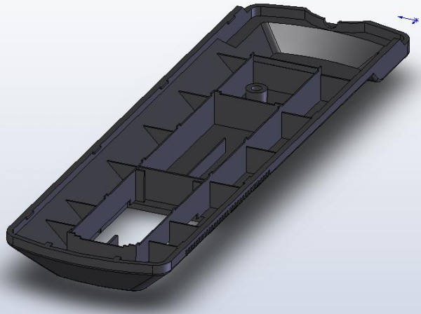
Resim 9: 1 no'lu kumandanýn alt kapaðý
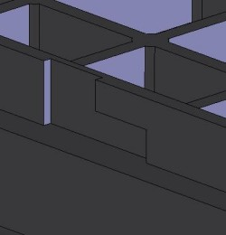
Resim 10: Kam yeri
Resim 10 da görüldüðü gibi yanda bu girintiyi oluþturabilmenin yolu kamlý bir kalýp yapmak geçmektedir. Kamlý kalýplarýn maliyeti ise oldukça yüksek olmakla beraber hassas bir iþçilik gerektirmektedir. Ayrýca kalýp ebatlarý da büyümekte böylece kalýpta kullanýlacak malzeme sarfiyatý artmakta dolayýsýyla kalýp ebatlarý büyüyünce hassas bir ürün elde edebilmek için SICAK YOLLUK sistemlerinin, MANÝFOLD plakalarýnýn kullanýlmasý gerekmektedir. Bütün bu sayýlanlar ise kalýp maliyetini büyük ölçüde arttýrmakta ve kalýplanan her parça baþýna maliyet önemli bir ölçüde artmaktadýr.
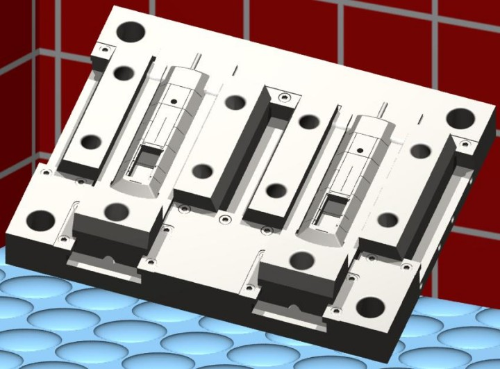
Resim 11: Hareketli grubun render görüntüsü
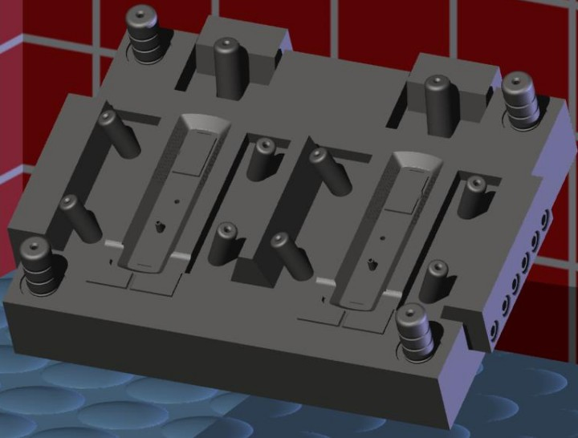
Resim 12: Sabit grup
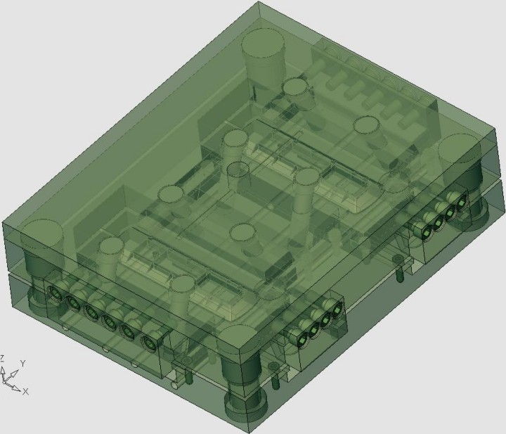
Resim 13: Kalýbýn þeffaf görünümü
Resimlerde de görüldüðü üzere siyah renkli uzaktan kumandanýn alt kapaðýnýn kalýplanabilmesi için bir parçada 3 adet kama (yan maça) ihtiyaç vardýr. Kalýp tek gözlü olduðunda ise üretim miktarý yarý yarýya azalacaktýr. Resimlerde görüldüðü üzere tasarýmý düþünülen kalýp 2 gözlü olduðunda toplamda 6 adet kam ve bunlarýn kilitlemeleri ile kam millerine ihtiyaç duyulmaktadýr. Bu ise oldukça masraflý bir iþlemdir. Ayrýca sonraki adýmlarda yapýlacak ýsý transfer analizinde de görüleceði üzere kalýp üzerindeki farklý köþelerin sýcaklýk farklarý diðer kumandanýn kalýbýna göre daha fazla olacaktýr. Bunun sonucunda ýsý kaybý fazlalaþacak bu da enerji tüketiminin artmasýna neden olacaktýr.
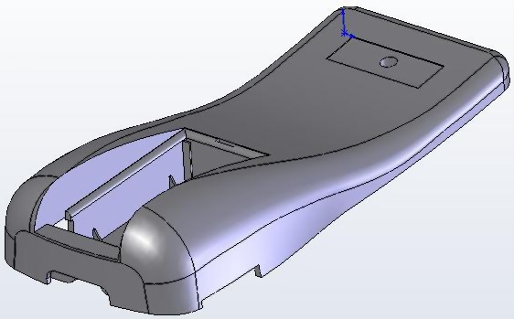
Resim 14: 2 nolu kumandanýn alt kapaðý
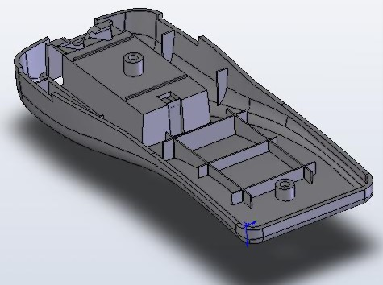
Resim 15: 2 nolu kumandanýn alt kapaðý (ýý)
Resim14 ve 15 de görüldüðü gibi yeni tasarlanan uzaktan kumandanýn alt kapaðýnda birbirine geçmeli týrnaklar yerine iki adet cývata baðlantýsý konulmuþtur. Böyle yapýlmasý ile parçanýn kalýptan çýktýktan sonra montaj edilebilirliði zorlaþýrken kalýp maliyeti ucuzlamaktadýr. Ancak göz önünde bulundurulmasý gereken bir nokta vardýr ki bu da bir televizyon kumandasýnýn kapaklarýnýn sýk sýk sökülüp takýlan parçalar olmamasýdýr. Ýçerisine elektronik devreleri yerleþtirilip kapatýldýktan sonra bir daha açýlmayan ancak arýza durumunda açýlan bir parça olmasýdýr. Bu sebepten ötürü týrnak geçmeli, büyük ebatlý yandan maçalý bir kalýp yapmak yerine basit, düz bir kalýp tasarlamak daha mantýklý görünmektedir. Ayrýca kalýbýn termal analizinde de görüleceði üzere kamsýz ve küçük ebatlý kalýbýn imalatýný seçmek kalýptan çýkarýlacak parçalarda daha az çekme ve çarpýlma meydana gelmesine neden olacaktýr.
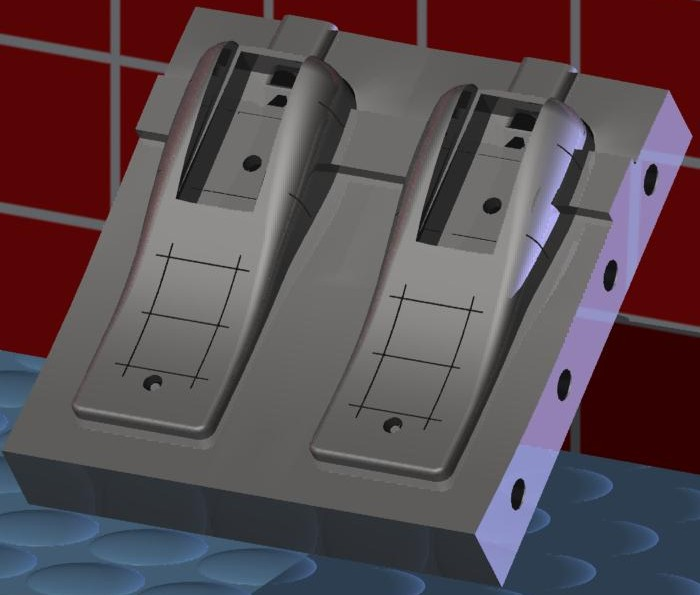
Resim 16: 2 nolu kumandanýn alt kapak çekirdeði
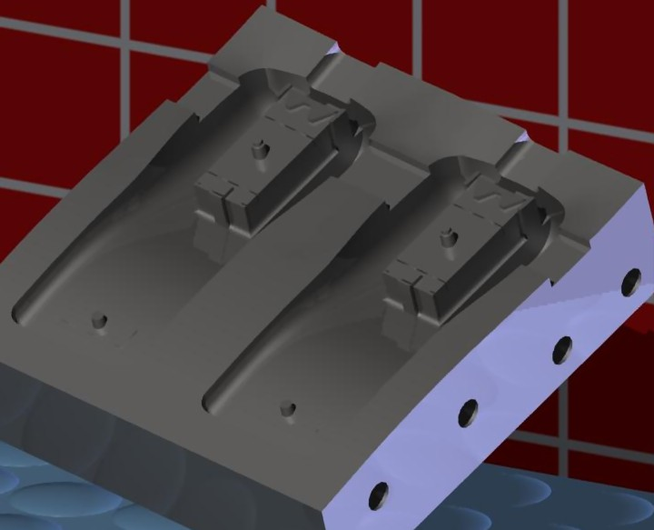
Resim 17: 2 nolu kumandanýn alt kapak çekirdeði (ýý)
4. Talaþlý imalata uygunluk, üretilebilirlik:
Ürün tasarýmlarýný etkileyen diðer önemli bir husus ise plastik parçalar çekirdeklerine ayrýldýktan sonra en kýsa zamanda çekirdeklerin ve kalýp gövdelerinin talaþlý imalatýnýn gerçekleþebilmesi ve en düþük takým maliyeti ile iþlenebilmesidir. Her iki kalýbýn gövde malzemeleri olarak Ç1050, çekirdek malzemeleri olarak ise alaþýmlý çeliklerden plastik kalýplarý için en uygun olan malzemelerden biri olan DIN 1.2738 malzemesi seçilmiþtir. Öncelikli olarak gövdelerin imal edilebilirliði sorgulanmýþtýr.
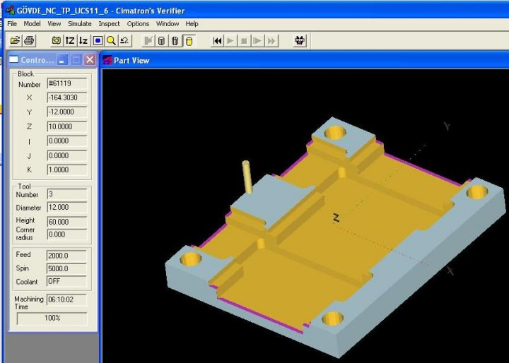
Resim 18: 1 nolu kumanda gövde CAM görüntüsü
Ýlk kumandanýn gövde ebatlarý 440 x 350 x 50 mm dir. Parçanýn ön frezeleme (gönye ve ölçüye getirme) ve taþlama (alt ve üst yüzeylerin paralelliði) iþleminden sonraki aðýrlýðý yaklaþýk 61 kg iken 32 kg lýk bir talaþ kaldýrma iþlemi sonunda parçanýn aðýrlýðý yaklaþýk olarak 29 kg a düþmüþtür. Burç yerleri içinse 2.5 Axes cam prosedürü uygulanmýþ öncesinde 35 mm çapýndaki burç delikleri için puntalama iþlemi ve ardýndan 20 mm lik matkapla delik delme iþlemi gerçekleþtirilmiþtir. Uygun devir, ilerleme, talaþ derinliði sonucunda simülasyonda görülen tahmini iþleme zamaný 6 saat 10 dakikadýr.
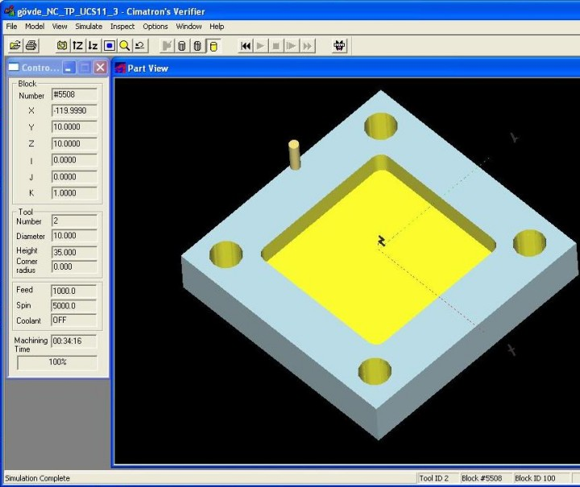
Resim 19: 2 nolu kumanda gövde CAM görüntüsü
Tasarlanan yeni kumanda kam tertibatý içermediði için gövde ebatlarý da büyük ölçüde ufalmýþtýr. Tasarlanan yeni kumandanýn gövde ebatlarý 260 x 265 x 50 mm dir ve konvansiyonel tezgahlardaki ön iþlemlerden sonra aðýrlýðý yaklaþýk 27 kg gelmektedir. Talaþlý imalattan çýktýktan sonraki aðýrlýðý ise yaklaþýk olarak 19 kg dýr. Görüldüðü gibi ilk gövdeden 32 kg lýk talaþ kaldýrma iþlemi gerçekleþirken diðerinden 8 kg lýk bir talaþ kaldýrma iþlemi gerçekleþmektedir. Tam olarak talaþlý imalat zamanýnda da %75 lik bir azalma mevcuttur. Parçanýn iþleme zamaný ise kaldýrýlan talaþ miktarýna göre daha büyük bir oranda azalmýþ ve yaklaþýk 35 dakikaya düþmüþtür. Çekirdeklerden yalnýzca biri (alt kapak) incelemeye alýnmýþtýr sonuçlar aþaðýda görüldüðü gibidir.
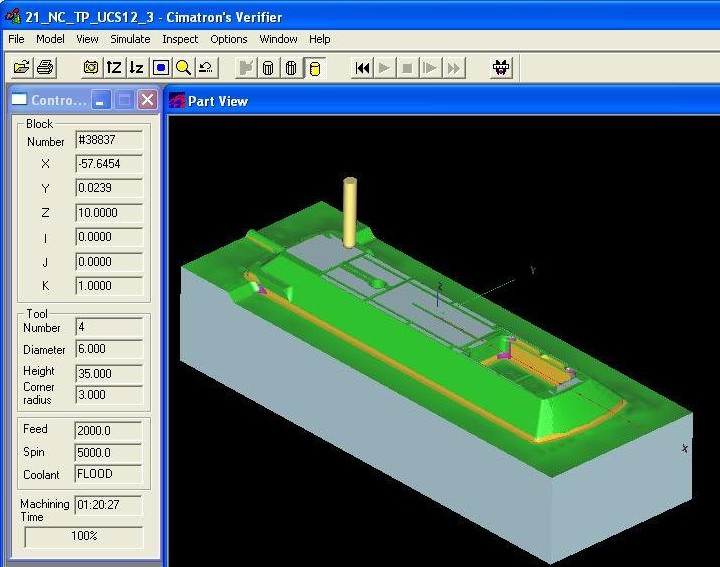
Resim 20: Alt kapak erkek CAM görüntüsü
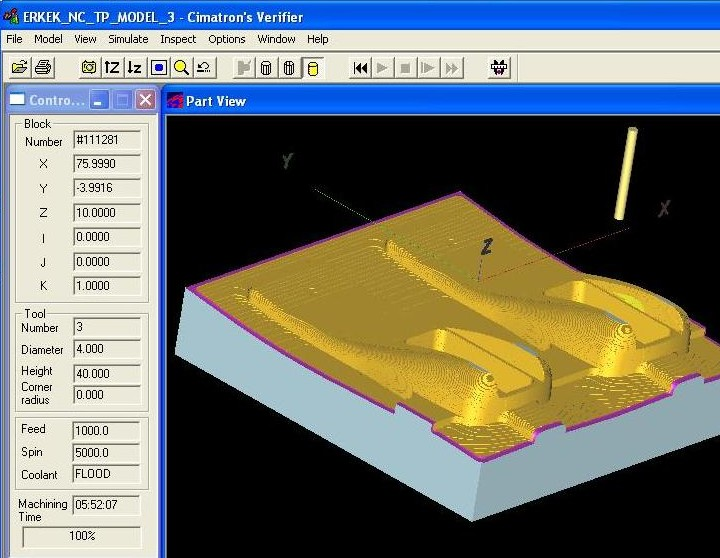
Resim 21: Alt kapak erkek CAM görüntüsü (ýý)
Çekirdekler bakýmýndan kýyaslandýðýnda ise alt kapaðýnda spline eðrisi içermeyen düz profilli çekirdeði iþlemek zaman bakýmýndan büyük tasarruf saðlamaktadýr. Parçalarýn simülasyon üzerindeki teorik iþleme zamanlarý arasýnda sað taraftaki çekirdeðin iþlenmesi 4 saat daha fazla sürmektedir. Dalma erezyon tezgahý ile federlerin dalýnmasý iþlemi hesaba katýlmamýþtýr.
Talaþlý imalat ve malzeme tüketimi bakýmýndan bir kýyaslama yapmak hangi kalýbýn tercih edilmesi gerektiðini dolayýsýyla hangi kumandanýn daha uygun olacaðýný bizlere gösterecektir. Son kýsýmda bir tablo ile bunu tartýþacaðýz.
|